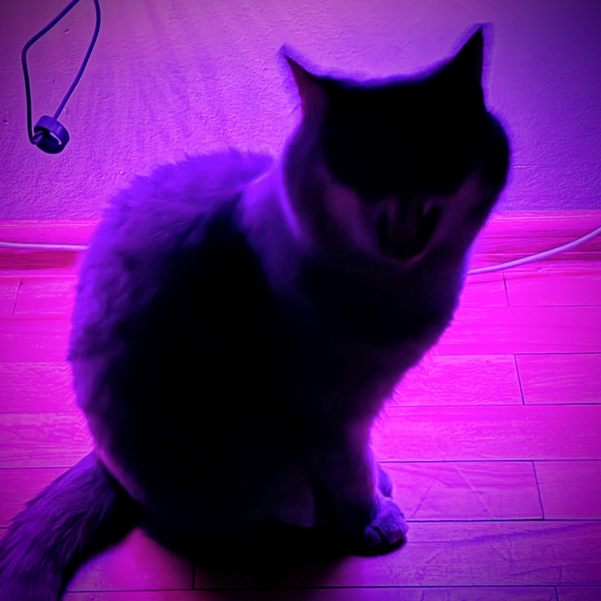
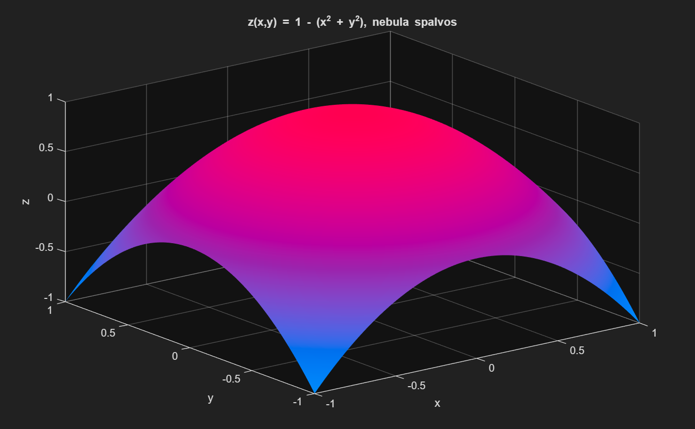
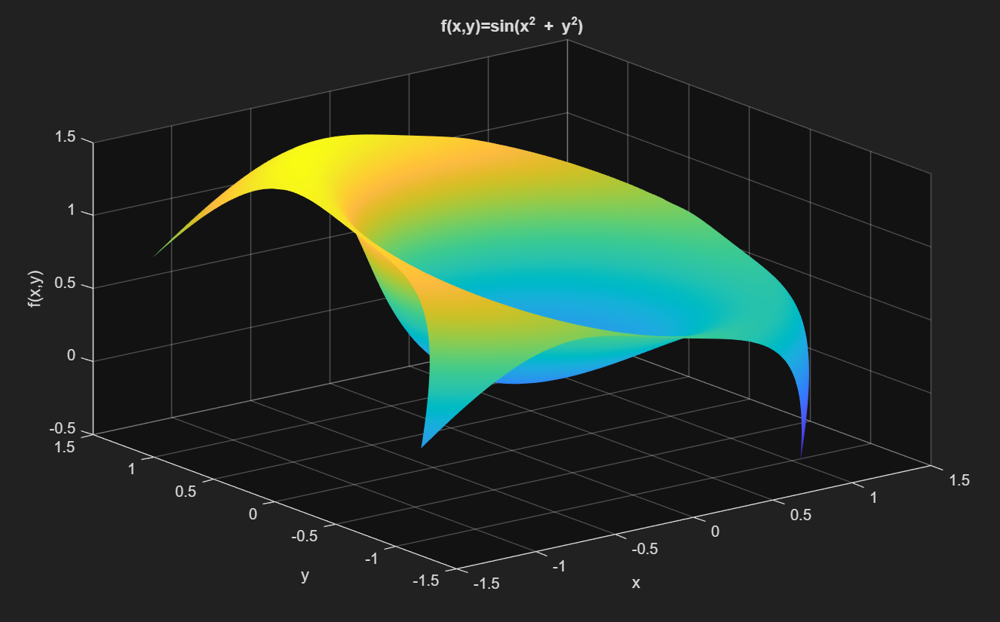

Auksė
Esu dirbtinio intelekto sistemų studentė
Apie

Dirbtinio intelekto sistemų studentė
Studijuoju dirbtinio intelekto sistemas VILNIUS TECH.
- Programavimo kalbos: C, C++ ir Python
- Darbo įrankiai: MATLAB, Visual Studio ir VS Code
- Studijose sukurtas projektas: muzikos biblioteka su Python
Sukūriau programą, kurioje galima pridėti dainas, jas vertinti ir taip pat kurti grojaraščius. Kurdama šį projektą išmokau susieti objektinio programavimo klases ir išsaugoti duomenis faile.
Patirtis
Trumpai apie mane
Auksė
Studijuoju dirbtinio intelekto sistemas Vilnius TECH universitete. Kuriu pirmąsias programas su Python ir C, o duomenims analizuoti naudoju MATLAB
- Studijų kryptis: dirbtinio intelekto sistemos
- Programavimo kalbos: Python, C, C++
- Domiuosi naujovėmis ir toliau gilinu esamas žinias
Išsilavinimas
Dirbtinio intelekto sistemų bakalauro studijos
2025-dabar
VILNIUS TECH
Mokausi programuoti, analizuoti duomenis, taikyti mašininio mokymosi metodus ir visą tai pritaikyti ateityje
Skriptinis programavimas
2026
VILNIUS TECH, Studijų dalykas
Mokausi rašyti MATLAB skriptus, atlikti skaičiavimus su masyvais ir rezultatus pavaizduoti grafikais.
Praktinė patirtis
Muzikos biblioteka
2026
Python programavimo projektas
- Sukūriau dainų pridėjimo ir paieškos funkcijas
- Įgyvendinau dainų vertinimo funkciją
- Pridėjau galimybę kurti grojaraščius
- Dainas ir grojaraščius išsaugojau faile
Asmeninės CV svetainės kūrimas
2026
Skriptinio programavimo laboratorinis darbas
- Pritaikiau HTML šabloną savo CV svetainei.
- Atnaujinau navigacijos meniu ir sukūriau skiltį „Apie“ su nuotrauka.
- Pakeitimus tikrinau naršyklėje naudodama „Live Server“.
- Paskelbiau svetainę per „GitHub Pages“.
Atlikti darbai
MATLAB laboratoriniuose darbuose nubraižiau tris paviršius ir palyginau, kaip jų forma priklauso nuo funkcijos.
- Visi
- Paraboloidas
- Sinuso funkcija
- Eksponentinė funkcija





Paslaugos
| Paslauga | Aprašymas | Kaina |
|---|---|---|
| Asmeninės CV svetainės kūrimas | Sukuriu svetainę su išsilavinimo, patirties ir atliktų darbų skiltimis. | 100 € |
| Duomenų vaizdavimas | Pagal pateiktus duomenis nubraižau grafikus MATLAB aplinkoje. | 30 € |
| Python skriptų kūrimas | Parašau skriptą, kuris nuskaito duomenis iš failo ir apskaičiuoja rezultatus. | 50 € |
Naudojamos technologijos ir įrankiai
- MATLAB – duomenims analizuoti ir grafikams braižyti.
- Python – duomenų apdorojimo skriptams kurti.
-
Svetainių kūrimo technologijos
- HTML – puslapio turiniui sudėti.
- CSS – spalvoms, šriftams ir išdėstymui parinkti.
CV svetainės kūrimo etapai
- Aptariu, kokios informacijos ir skilčių reikia svetainėje.
- Sukuriu puslapį, sudedu CV tekstą ir darbų pavyzdžius.
- Patikrinu, kaip svetainė atrodo telefone ir kompiuteryje, ir paskelbiu ją per GitHub Pages.
Vaizdo ir garso įrašai
Darbas klaviatūra
YouTube įrašas
Laikrodžio tiksėjimas
Kontaktai
Mano programavimo projektus galima peržiūrėti GitHub profilyje.
Atidaryti GitHub profilį